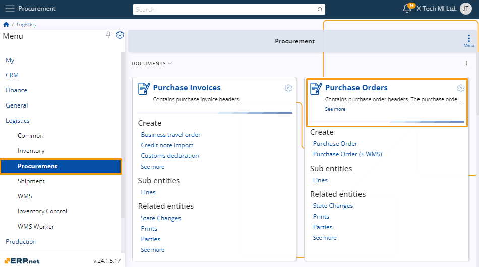

Product supply panel
In the Purchase Order, Transfer Order, and Work Order documents, there's a functional panel called Product Supply.
This panel displays a list of products available for delivery at a specific store within the company.
It filters products based on the procurement method, whether it's PurchaseOrder.Supplier, TransferOrder.FromStore, or WorkOrder.DefaultStore.
Navigation
To open the Product supply panel, you need to navigate to a document of which kind it’s available.

Once you’ve opened one, click on the **Menu ** button, and from it click Functional panels and a drop-down menu will open, choose Product supply, and the panel will open next to the document window.

Product Panel Information
The Product Supply panel includes a search bar and an option to filter by product groups.
You can adjust the product quantity using the “+” and “-” buttons.
There is also an orange button displaying the amount suggested for the product.
Placeholder - Image
Filter by product groups
You can display products from a specific group in the Product Supply panel for your convenience.
To do this, open the Product Group drop-down menu and select the desired group.
Placeholder - Image
Once selected, only products from the chosen group will appear in the list.
Placeholder - Image
Buttons to change the quantity
In the Product Supply panel, you can view and adjust the quantity of listed products.
Use the “+” and “-” buttons to increase or decrease the quantity as needed.
Placeholder - Image
Suggested quantity button
In the Product Supply panel, an orange button is located between the unit count and the “+” button.
Placeholder - Image
Clicking this button will automatically set the suggested quantity for that product.
Placeholder - Image
[!] Note: This button is displayed only for products that are available for supply.